SDET Course Project 13 · Study Guide
CRLB vs Ziv–Zakai bound for a delay-locked loop and a batch maximum-likelihood estimator of BPSK signals
This guide explains every concept from first principles, gives complete derivations and proofs, records every design decision and why it was made, presents all results with their uncertainty, summarises the four literature surveys, lays out the proposal for the remaining 30%, and ends with a question bank with follow-ups.
Prepared for the 70% evaluation, 5–6 November 2026. Repository: github.com/nilavra17ghosh/TIME-DELAY-TRACKING. Every number is traceable to an executed notebook (notebooks 00–07).
DONE completed and verified PARTIAL partly done PROPOSED not yet implemented
Contents
0 How to use this guide
1 The problem in one picture
2 Mathematical toolkit (with proofs)
3 The signal model and why each choice was made
4 Sprint 1 — the batch MLE
5 Sprint 3 — the Cramér–Rao lower bound
6 The threshold effect
7 Sprint 4 — the Ziv–Zakai bound
8 Sprint 2 — the delay-locked loop
9 Experimental methodology and validation
10 Results (Sprints 1–6)
11 Decision log and mistakes we fixed
12 What the four surveys taught us
13 Limitations
14 Proposal for the remaining 30%
15 Question bank with follow-ups
A Notation and equation sheet
Read Sections 1–8 with a pen: every derivation is written so you can redo it on paper. Sections 9–13 are what you show and defend. Section 14 is the research proposal. Section 15 is for rehearsal: cover the answer, say it aloud, then check. The notebooks contain the same mathematics next to the code that implements it.
| Item | Status | Where |
|---|---|---|
| Signal model, checks | DONE | notebook 00 |
| Batch MLE, error vs SNR, error distributions | DONE | notebook 01 |
| DLL: S-curve, pull-in, tracking, jitter | DONE | notebook 02 |
| CRLB derivation, checks, overlay | DONE | notebook 03 |
| ZZB derivation, limits, numerical ZZB | DONE | notebook 04 |
| Four-curve comparison, MMSE, DLL theory, DLL failure modes | DONE | notebook 05 |
| Precise thresholds (CIs, 5 pilots), DLL vs MLE | DONE | notebook 06 |
| Prior-width study ($T_a$ = 1, 4, 16) | DONE | notebook 07 |
| Explaining the pilot-to-pilot spread | PARTIAL | measured, not explained |
| Report and final slides | PARTIAL | evaluation slides only |
| Dynamic decomposition (research extension) | PROPOSED | Section 14 |
Part I — Foundations
A transmitter sends a known waveform $s(t)$. The receiver observes it delayed by an unknown $\tau$ and corrupted by noise:
$$ r(t) = s(t-\tau) + w(t). $$Estimating $\tau$ is the core of GNSS ranging, radar, sonar and synchronisation: a delay error of one microsecond is 300 m of range error. The project compares two estimators and two bounds:
| What it is | Key property | |
|---|---|---|
| Batch MLE | looks at a whole block of data and picks the delay whose replica fits best | optimal at high SNR; needs a search over delays |
| DLL | a feedback loop that nudges its estimate using "early minus late" correlations | cheap, real-time; can lose lock |
| CRLB | lower bound on the variance of unbiased estimators | local: only uses the curvature of the true correlation peak |
| ZZB | lower bound on the MSE of any estimator, built from binary detection | global: sees distant wrong peaks and the prior |
The phenomenon — the threshold effect. At high SNR the error is small and follows the CRLB. Below a certain SNR, noise occasionally makes a wrong delay look best; the estimate jumps far away and the mean-squared error rises far faster than the CRLB predicts. The project asks: where is this threshold, does the ZZB predict it, and why do the DLL and the MLE behave differently?
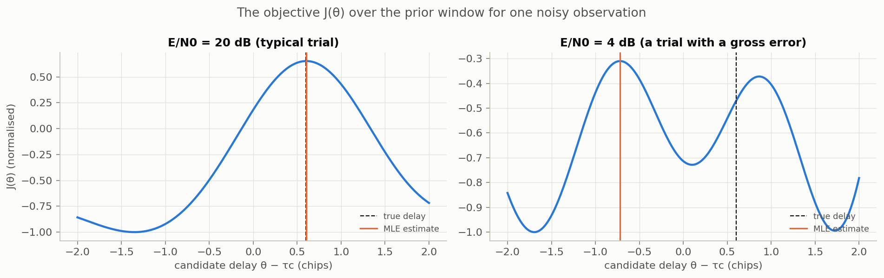
Everything later rests on six facts. Each is proved here so nothing is taken on trust.
For an estimator $\hat\tau$ of $\tau$ with error $e=\hat\tau-\tau$:
$$ \underbrace{\mathbb E[e^2]}_{\text{MSE}} = \underbrace{\operatorname{var}(\hat\tau)}_{\text{spread}} + \underbrace{\big(\mathbb E[\hat\tau]-\tau\big)^2}_{\text{bias}^2}. $$Write $e = (\hat\tau-\mathbb E\hat\tau)+(\mathbb E\hat\tau-\tau)$. Square and take expectations; the cross term is $2(\mathbb E\hat\tau-\tau)\,\mathbb E[\hat\tau-\mathbb E\hat\tau]=0$. ∎
Below threshold our estimators become biased (a delay near the edge of the window is pulled inward). The CRLB bounds only the variance of unbiased estimators, while the ZZB bounds the MSE. So all our plots use MSE.
If $r[n]=\mu_n(\theta)+w[n]$ with $w[n]\sim\mathcal N(0,\sigma^2)$ independent, the likelihood of the data is
$$ p(\mathbf r;\theta)=\prod_{n}\frac{1}{\sqrt{2\pi\sigma^2}}\exp\!\Big(-\frac{(r[n]-\mu_n(\theta))^2}{2\sigma^2}\Big),\qquad \ln p(\mathbf r;\theta)=\text{const}-\frac{1}{2\sigma^2}\sum_n\big(r[n]-\mu_n(\theta)\big)^2 . $$Maximising the likelihood is therefore the same as minimising the squared distance between the data and the model — least squares.
$Q(x)=\int_x^\infty \tfrac{1}{\sqrt{2\pi}}e^{-u^2/2}\,du = P(Z>x)$ for $Z\sim\mathcal N(0,1)$. Properties used later: $Q(0)=\tfrac12$, $Q$ decreases, $Q(x)\le\tfrac12e^{-x^2/2}$ for $x\ge0$.
Observe $\mathbf r=\mathbf s_i+\mathbf w$, $i\in\{0,1\}$, equally likely, $\mathbf w\sim\mathcal N(0,\sigma^2 I)$. The smallest possible probability of deciding wrongly is
$$ P_{\min}=Q\!\left(\frac{\|\mathbf s_1-\mathbf s_0\|}{2\sigma}\right). $$With equal priors the optimal (MAP) rule picks the hypothesis with the larger likelihood, i.e. the signal closer to $\mathbf r$: decide 1 iff $\|\mathbf r-\mathbf s_1\|^2\lt\|\mathbf r-\mathbf s_0\|^2$. Expanding, this is $T=\langle\mathbf r,\mathbf s_1-\mathbf s_0\rangle \gt \tfrac12(\|\mathbf s_1\|^2-\|\mathbf s_0\|^2)$. Under hypothesis 0, $T$ is Gaussian with mean $\langle\mathbf s_0,\mathbf s_1-\mathbf s_0\rangle$ and standard deviation $\sigma\|\mathbf s_1-\mathbf s_0\|$. The distance from this mean to the threshold is $\tfrac12\|\mathbf s_1-\mathbf s_0\|^2$ (expand both). So the error probability under 0 is $Q\big(\tfrac12\|\mathbf s_1-\mathbf s_0\|^2/(\sigma\|\mathbf s_1-\mathbf s_0\|)\big)=Q(\|\mathbf s_1-\mathbf s_0\|/2\sigma)$, and by symmetry the same under 1. ∎
The score is $S(\theta)=\partial_\theta\ln p(\mathbf r;\theta)$, and the Fisher information is $I(\theta)=\mathbb E[S(\theta)^2]$.
If $\mathbb E[S(\theta)]=0$ (regularity) and $\hat\theta$ is unbiased, then $\operatorname{var}(\hat\theta)\ge 1/I(\theta)$.
Unbiasedness: $\int\hat\theta(\mathbf r)\,p(\mathbf r;\theta)\,d\mathbf r=\theta$. Differentiate in $\theta$: $\int\hat\theta\,\partial_\theta p\,d\mathbf r=1$, i.e. $\mathbb E[\hat\theta S]=1$. Because $\mathbb E[S]=0$, also $\mathbb E[(\hat\theta-\theta)S]=1$. By Cauchy–Schwarz, $1=\mathbb E[(\hat\theta-\theta)S]^2\le\mathbb E[(\hat\theta-\theta)^2]\,\mathbb E[S^2]=\operatorname{var}(\hat\theta)\,I(\theta)$. ∎
Equality needs $S$ proportional to $\hat\theta-\theta$: then the estimator is efficient. The MLE becomes efficient as the SNR grows (asymptotic efficiency).
The normalised autocorrelation of the waveform is $\rho(h)=\sum_n s(t_n)s(t_n-h)\big/\sum_n s(t_n)^2$, with $\rho(0)=1$ and $|\rho(h)|\le 1$ (Cauchy–Schwarz). The mean-square (Gabor) bandwidth is
$$ \beta^2=\frac{\sum_n s'(t_n)^2}{\sum_n s(t_n)^2}=\frac{\int(2\pi f)^2|S(f)|^2df}{\int|S(f)|^2df}. $$The second equality is Parseval's theorem applied to $s'$, whose spectrum is $j2\pi f\,S(f)$. Two facts used later:
$\frac{d^2}{dh^2}\sum_n s(t_n)s(t_n-h)\Big|_{h=0}=\sum_n s(t_n)s''(t_n)$. Summation by parts (exact for a band-limited signal sampled above Nyquist, where sums equal integrals times $f_s$) gives $\sum s\,s''=-\sum s'^2$. Dividing by $\sum s^2$: $\rho''(0)=-\beta^2$, hence $1-\rho(h)\approx\tfrac12\beta^2h^2$ for small $h$. ∎
Summation by parts needs the waveform's slope to be continuous. Truncating the pulse with a hard cut left a tiny slope jump; samples landing on it made the measured curvature disagree with $\beta^2$. We fixed it by tapering the pulse smoothly over its last chip (Section 11).
For a non-negative random variable $X$: $\;\mathbb E[X^2]=\int_0^\infty 2x\,P(X\ge x)\,dx.$
$X^2=\int_0^X2x\,dx=\int_0^\infty 2x\,\mathbf 1\{X\ge x\}\,dx$. Take expectations and swap expectation and integral (allowed because the integrand is non-negative — Tonelli's theorem): $\mathbb E[X^2]=\int_0^\infty2x\,P(X\ge x)\,dx$. ∎
This identity is the first step of the Ziv–Zakai bound: it turns the MSE into a sum over error sizes.
Notebook 00. Every estimator and bound uses exactly this model, so theory and simulation always describe the same thing.
with a known pilot $a_k\in\{\pm1\}$ of $N_c=64$ chips, time in units of chips ($T_c=1$), and the raised-cosine pulse
$$ p(t)=\operatorname{sinc}(t)\,\frac{\cos(\pi\alpha t)}{1-(2\alpha t)^2},\qquad \alpha=0.5, $$smoothly truncated to $|t|\le6$ chips. $p$ is a Nyquist pulse: $p(0)=1$ and $p(k)=0$ at every other integer, so at chip centres $s(k)=a_k$. The delay has a uniform prior $\tau\sim\mathcal U[\tau_c-T_a/2,\tau_c+T_a/2]$ with $T_a=4$ chips.
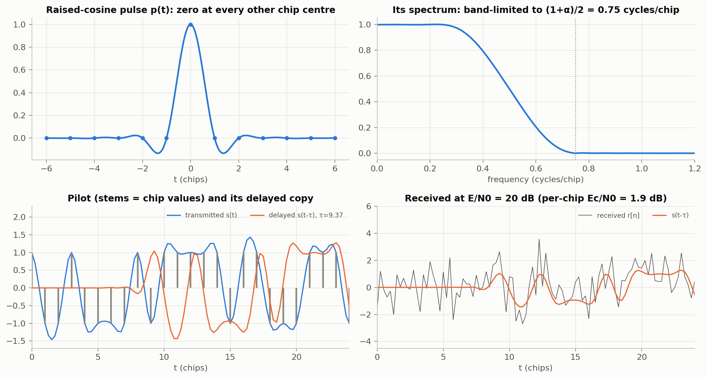
Continuous white noise has two-sided spectral density $N_0/2$. Sampling at rate $f_s$ after an ideal band-limit gives samples of variance $\sigma^2=\tfrac{N_0}{2}f_s$. The signal energy is $E=\int s^2dt=T_s\sum_n s[n]^2$ (exact for a band-limited signal sampled above Nyquist). Therefore
$$ \frac{E}{N_0}=\frac{T_s\sum_n s[n]^2}{2\sigma^2T_s}=\frac{\sum_n s[n]^2}{2\sigma^2}\quad\Longrightarrow\quad \sigma^2=\frac{\sum_n s[n]^2}{2\,E/N_0}. $$This is how the code sets the noise for a requested $E/N_0$. All plots use the total batch $E/N_0$ of the 64-chip pilot; per chip, $E_c/N_0=E/N_0-10\log_{10}64=E/N_0-18.1$ dB. Check: requesting 10 gives a measured 10.03.
| Decision | Reason | What goes wrong otherwise |
|---|---|---|
| Raised-cosine pulse | band-limited like a real receiver; analytic spectrum | rectangular chips have infinite bandwidth ⇒ $\beta^2=\infty$ ⇒ CRLB = 0 |
| 4 samples per chip | spectrum ends at 0.75 cycles/chip < Nyquist (2) | aliasing; sums ≠ integrals |
| Delay applied analytically | $s(t_n-\tau)$ evaluated exactly | interpolation error would contaminate high-SNR results |
| Known pilot, coherent, real baseband, AWGN | closed-form likelihood, CRLB and ZZB | unknown bits/phase add nuisance parameters (future work) |
| Uniform prior, $T_a=4$ chips | the ZZB is Bayesian and needs a prior; wide enough to contain wrong peaks | $T_a=1$ masks the threshold (Section 10.7) |
| SNR = batch $E/N_0$ | both bounds depend on total energy | per-sample SNR hides the dependence on pilot length |
| MSE as the metric | estimators are biased below threshold; ZZB bounds MSE | variance would hide the bias |
The original script (archived) used a 127-chip m-sequence, a Gaussian filter, a fixed delay and per-sample SNR, and showed the same qualitative result. It was replaced because the ZZB needs a random delay with a prior, the bounds are naturally written in $E/N_0$, and the raised cosine makes the CRLB checkable analytically.
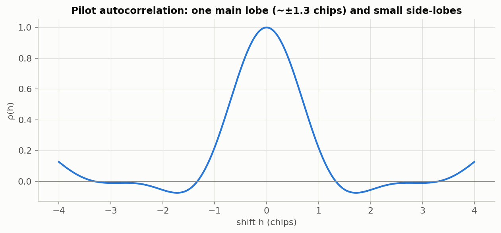
Part II — Estimators and bounds
Notebook 01. DONE
With $\mu_n(\theta)=s(t_n-\theta)$, the Gaussian log-likelihood (Section 2.2) expands as
$$ \ln p(\mathbf r;\theta)=\text{const}-\frac{1}{2\sigma^2}\sum_n r[n]^2+\frac{1}{\sigma^2}\Big(\sum_n r[n]\,s(t_n-\theta)-\tfrac12\sum_n s(t_n-\theta)^2\Big). $$The first sum does not depend on $\theta$, hence
$J$ is computed on a grid of step $\Delta=1/64$ chip. Fit a parabola through the best grid point $g$ and its neighbours: $J(\theta_g+x\Delta)\approx a x^2+bx+c$ with $J_{g\pm1}=a\pm b+c$, $J_g=c$. So $a=\tfrac12(J_{g-1}-2J_g+J_{g+1})$ and $b=\tfrac12(J_{g+1}-J_{g-1})$. The vertex $x^\star=-b/2a$ gives
$$ \hat\theta=\theta_g+\frac{\Delta}{2}\,\frac{J_{g-1}-J_{g+1}}{J_{g-1}-2J_g+J_{g+1}}. $$Check: without noise the error is 0.02 % of the CRLB at 30 dB — negligible.
With the uniform prior, Bayes' rule gives $p(\theta\mid\mathbf r)\propto\exp\!\big(J(\theta)/\sigma^2\big)$ on the window, and the estimator with the smallest possible MSE is the posterior mean
$$ \hat\tau_{\rm MMSE}=\frac{\int\theta\,e^{J(\theta)/\sigma^2}d\theta}{\int e^{J(\theta)/\sigma^2}d\theta}. $$For any estimator $g(\mathbf r)$, $\mathbb E[(\tau-g)^2\mid\mathbf r]=\operatorname{var}(\tau\mid\mathbf r)+(\mathbb E[\tau\mid\mathbf r]-g)^2$, minimised by $g=\mathbb E[\tau\mid\mathbf r]$; averaging over $\mathbf r$ keeps the minimum. ∎
It is computed from the same grid of $J$ values (no extra cost) but needs $\sigma^2$. It matters because the ZZB bounds every estimator, so the fair comparison for the bound is the best one (Section 10.6).
Notebook 03. DONE
$\beta^2$ computed from the spectrum (FFT at 64 samples/chip) is 2.4470; from the samples (the code) 2.4481 — agreement to 0.05 %. For the isolated pulse $\beta^2=2.838$; averaged over 400 random pilots, 2.873.
$\beta^2$ is the bandwidth of the actual chip pattern: more sign changes mean more high-frequency energy. Over 400 random 64-chip pilots, $\beta^2$ ranges from 1.77 to 4.27 — a factor of 2.4 in the CRLB. Consequence: every estimator and bound must use the same pilot, and thresholds defined relative to the CRLB move from pilot to pilot.
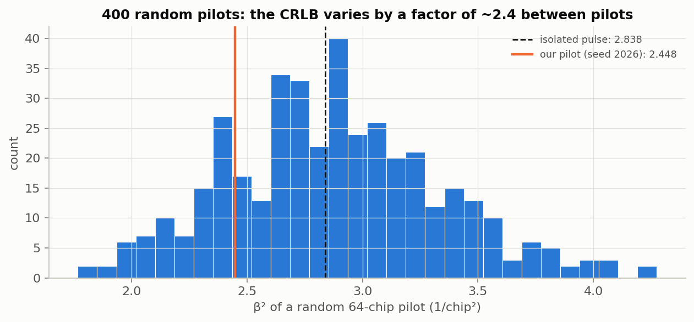
Edge effect (small). For delays within 0.05 chip of a window edge, the constrained MLE achieves MSE/CRLB = 0.63 at 20 dB (half of its possible errors are cut off). This changes the averaged MSE by about 1 %.
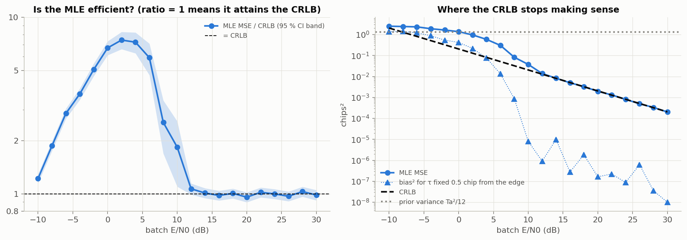
Above threshold the estimate always lands on the true correlation peak and errors are small and Gaussian. In the threshold region a small fraction $P$ of trials are gross errors (|e| > 0.5 chip, outside the main lobe). A useful mental model (the idea behind the method of interval errors, MIE):
$$ \text{MSE}\approx(1-P)\cdot\text{CRLB}+P\cdot\sigma^2_{\rm gross}, $$where $\sigma^2_{\rm gross}$ is the mean-square size of a wrong-peak error (of order the prior width squared). Because $\sigma^2_{\rm gross}\gg\text{CRLB}$, even $P=1\%$ dominates: at 10 dB a 1 % rate of 2-chip errors adds 0.04 chips², twice the CRLB. The threshold is therefore a change in the type of error, not a gradual widening.
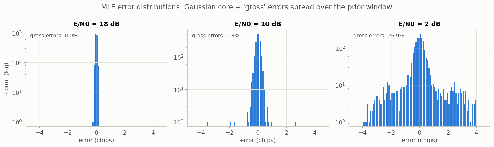
Very low SNR. On pure noise the MLE's MSE is 3.09 chips² — larger than the prior variance 1.33 — because the arg-max of a noise process piles up at the window edges (about 20 % of estimates sit exactly on an edge). The MMSE estimator instead tends to the window centre and its MSE to $T_a^2/12$.
Notebook 04. DONE (derivation) · numerical evaluation also done (Sprint-5 material).
If an estimator could locate $\tau$ to within $h/2$, it could tell "$\tau=\varphi$" from "$\tau=\varphi+h$". Detection theory gives the best possible error rate for that test; therefore the estimator must make errors of size about $h/2$ at least that often. Doing this for every separation $h$ — small and large — and adding up gives a lower bound on the MSE that sees both local and distant (wrong-peak) errors.
Step 1 — MSE as a sum over error sizes. Apply Section 2.6 to $X=|e|$ and substitute $x=h/2$ ($2x\,dx=\tfrac h2dh$):
$$ \text{MSE}=\int_0^\infty\frac h2\,P\!\left(|e|\ge\tfrac h2\right)dh. \tag{1}$$Step 2 — split by direction and shift. Condition on the true delay and substitute $\varphi\to\varphi+h$ in the second part:
$$ P(|e|\ge\tfrac h2)=\int\Big[p(\varphi)P(e\ge\tfrac h2\mid\varphi)+p(\varphi+h)P(e\le-\tfrac h2\mid\varphi+h)\Big]d\varphi. \tag{2}$$Step 3 — recognise a detector. Fix $\varphi,h$ and consider $H_0:\tau=\varphi$ vs $H_1:\tau=\varphi+h$ with weights $p(\varphi)$, $p(\varphi+h)$. Use the estimator to decide: choose $H_1$ iff $\hat\tau\ge\varphi+h/2$. Under $H_0$ it errs exactly when $e\ge h/2$; under $H_1$ exactly when $e\lt-h/2$. So the bracket in (2) is $(p(\varphi)+p(\varphi+h))\times$ (error probability of this detector), which is at least that of the optimal detector:
$$ P(|e|\ge\tfrac h2)\ \ge\ \int\big(p(\varphi)+p(\varphi+h)\big)\,P_{\min}(\varphi,\varphi+h)\,d\varphi. \tag{3}$$Step 4 — combine and valley-fill. Substituting (3) into (1):
$$ \text{MSE}\ \ge\ \frac12\int_0^\infty h\;\mathcal V\Big\{\int\big(p(\varphi)+p(\varphi+h)\big)P_{\min}\,d\varphi\Big\}\,dh,\qquad \mathcal V\{g\}(h)=\max_{\eta\ge0}g(h+\eta). \tag{4}$$Valley filling is allowed because the left side of (3) can only decrease with $h$, so it also exceeds every later value of the right side (Bell et al., 1997). For our pilot it changes the bound by less than 0.01 %.
Step 5 — the optimal detector for our signals. $H_0$, $H_1$ are two known signals $s(\cdot-\varphi)$, $s(\cdot-\varphi-h)$ in white Gaussian noise, equally likely under the uniform prior. By Section 2.3, $P_{\min}=Q(\|\mathbf s_1-\mathbf s_0\|/2\sigma)$, and $\|\mathbf s_1-\mathbf s_0\|^2=\|\mathbf s_0\|^2+\|\mathbf s_1\|^2-2\langle\mathbf s_0,\mathbf s_1\rangle=2\sum s^2(1-\rho(h))$. With $\sum s^2/(2\sigma^2)=E/N_0$:
$$ P_{\min}(h)=Q\!\left(\sqrt{\tfrac{E}{N_0}\big(1-\rho(h)\big)}\right). \tag{5}$$Two delays are hard to distinguish when the signal is weak or when the shifted signals look alike ($\rho(h)$ near 1: inside the main lobe or on a side-lobe). $P_{\min}$ does not depend on $\varphi$ (verified to $2\cdot10^{-5}$).
Step 6 — the uniform prior. Both $\varphi$ and $\varphi+h$ must lie in the window: a range of length $T_a-h$, each density $1/T_a$, so $\int(p(\varphi)+p(\varphi+h))d\varphi=2(1-h/T_a)$ for $0\le h\le T_a$. The factors $\tfrac12$ and 2 cancel:
$E/N_0\to0$ gives $Q(0)=\tfrac12$: $\;\int_0^{T_a}\tfrac h2(1-\tfrac h{T_a})dh=\tfrac{T_a^2}4-\tfrac{T_a^2}6=\tfrac{T_a^2}{12}$, the prior variance. No estimator can do better without data, and "answer the window centre" achieves it. Unlike the CRLB, the bound stays finite. ∎
Only small $h$ contribute (otherwise $Q\approx0$). There $1-\rho(h)\approx\tfrac12\beta^2h^2$ (Section 2.5) and $1-h/T_a\approx1$. With $a^2=\tfrac12(E/N_0)\beta^2$: $\;\text{ZZB}\to\int_0^\infty h\,Q(ah)\,dh$. Integrate by parts with $Q'(x)=-\phi(x)$:
$$ \int_0^\infty hQ(ah)\,dh=\Big[\tfrac{h^2}2Q(ah)\Big]_0^\infty+\frac a2\int_0^\infty h^2\phi(ah)\,dh=\frac{1}{2a^2}\int_0^\infty u^2\phi(u)\,du=\frac{1}{2a^2}\cdot\frac12=\frac{1}{4a^2}, $$and $1/(4a^2)=1/(2(E/N_0)\beta^2)=$ CRLB. ∎
Numerically: the ZZB equals 1.3323 at zero SNR ($T_a^2/12=1.3333$) and ZZB/CRLB = 0.997 at 40 dB.
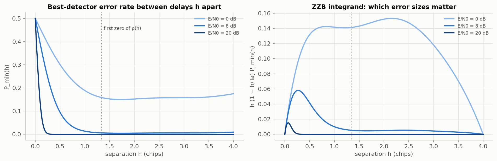
"Suppose an estimator is usually within half a chip. Then I could use it to tell 'delay φ' from 'delay φ+1 chip'. Detection theory says how often any detector must confuse those two — that depends only on the SNR and how similar the two shifted signals are. So the estimator must make errors that big at least that often. Doing this for every separation and adding up gives a lower bound on the MSE. At high SNR only tiny separations get confused and I recover the CRLB; at low SNR even distant delays are confused and the bound rises — that's the threshold. With no signal, the bound is the prior variance."
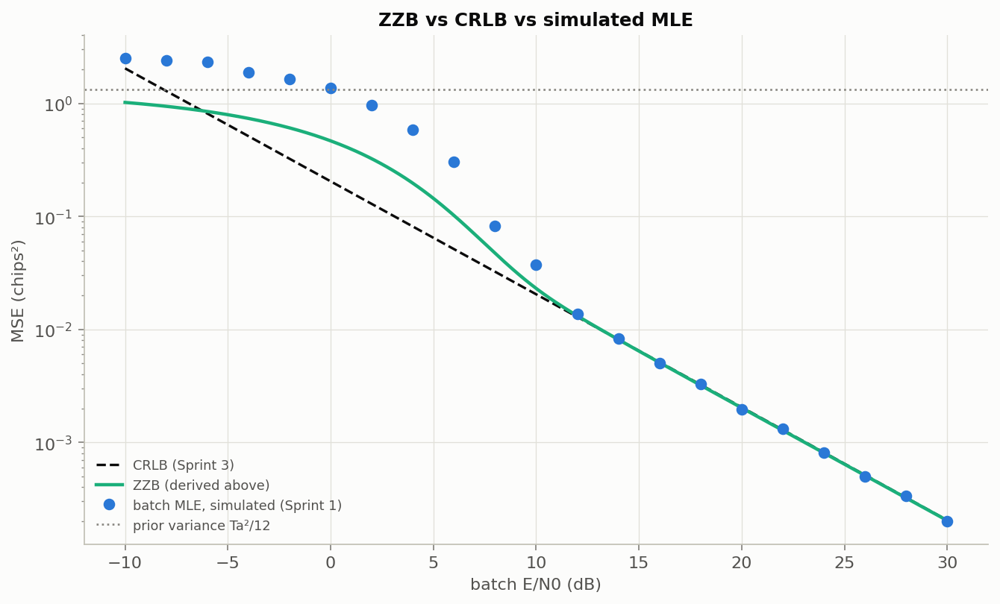
Notebook 02. DONE
With current estimate $\theta$ and error $\varepsilon=\theta-\tau$, correlate the data with replicas shifted by $\pm d/2$ ($d=0.5$ chip):
$$ E=\sum_n r[n]\,s(t_n-\theta+\tfrac d2),\qquad L=\sum_n r[n]\,s(t_n-\theta-\tfrac d2). $$Without noise each is a sample of the autocorrelation $R(h)=\sum_n s(t_n)s(t_n-h)$: $E-L=R(\varepsilon-\tfrac d2)-R(\varepsilon+\tfrac d2)$. $R$ is symmetric with its peak at 0, so $E=L$ when $\varepsilon=0$, and a Taylor expansion gives
$$ E-L\approx-2R'(\tfrac d2)\,\varepsilon=k\,\varepsilon,\qquad k\gt0\ (\text{since }R'(d/2)\lt0). $$Dividing by $k$, the discriminator $D=(E-L)/k\approx\varepsilon$ measures the error. The whole curve $D(\varepsilon)$ is the S-curve.
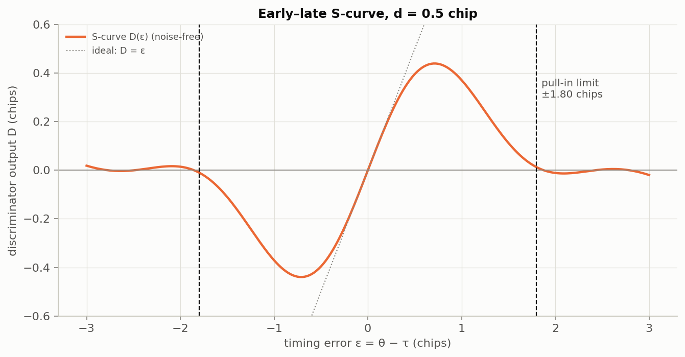
Every $M=4$ chips: $\theta_{j+1}=\theta_j-K\,D_j$. In the linear region $D_j=\varepsilon_j+n_j$, so
$$ \varepsilon_{j+1}=(1-K)\,\varepsilon_j-K\,n_j . $$Design: $N_{\rm eff}=64/4=16$ ⇒ $K=2/17\approx0.118$ ⇒ $1/(2B_L)=64$ chips: the locked loop averages as much signal as the 64-chip batch. The loop runs 160 updates = 640 chips in total.
| Detail | What we do | What went wrong without it |
|---|---|---|
| Acquisition | coarse search (0.5-chip grid) over the prior on the first 64 chips, then track | the loop only pulls in within ±1.8 chips; the prior is ±2 |
| Block replicas | block $j$'s replica contains only its 4 chips | full replica over a hard-cut window: bias ≈ 33 % of the CRLB at 30 dB |
| Offset calibration $b_j$ | subtract each block's noise-free discriminator output at zero error | neighbour-chip overlap gives a fixed offset: MSE ≈ 2× CRLB at 30 dB. $b_j$ depends only on the known pilot (identical results with deliberately wrong timing) |
| Constant gain $\bar k$ | normalise by the average slope | per-block slopes vary 0.29–1.7× the average; dividing by small ones amplifies noise |
| Windows follow θ | integration windows placed by the loop's own timing | fixed windows distorted low-SNR behaviour |
| Same pilot, repeated | the 64-chip pilot repeated like a GNSS code | a different pilot made the DLL appear to beat the CRLB |
Linearised, the final error is a weighted sum of the noise samples, $\varepsilon=\langle\mathbf w,G\rangle$, with $G=\sum_jc_jg_j$ ($g_j$ = early-minus-late replica of block $j$, $c_j=(K/\bar k)\prod_{i\gt j}(1-Kk_i/\bar k)$). Hence exactly $\operatorname{var}(\varepsilon)=\sigma^2\|G\|^2$. Measured: DLL MSE/CRLB = 1.088, 1.083, 1.039 (±0.024) at 15, 20, 25 dB; theory 1.071.
"DLL ≈ CRLB" holds because we chose K. A narrower loop averages more of its 640 chips and goes below the 64-chip CRLB — not a violation, because that CRLB is not a bound for an estimator using 640 chips. The 7 % excess comes from early–late being a finite-difference approximation of the derivative an optimal estimator would use.
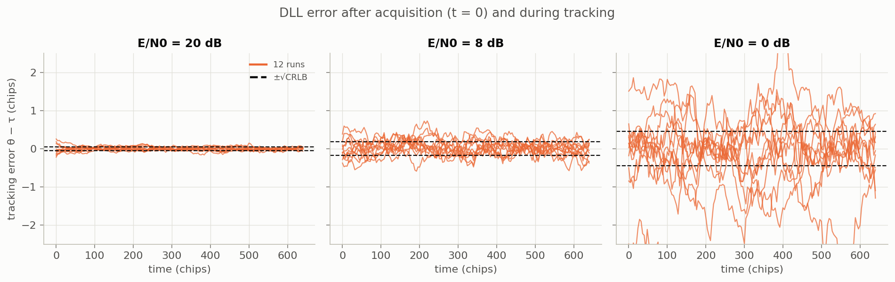
Part III — Evidence
For each SNR we draw $N$ independent trials (random delay from the prior, fresh noise, one estimate) and report $\widehat{\text{MSE}}=\frac1N\sum_ie_i^2$. Its standard error is $\text{sd}(e^2)/\sqrt N$. Near the threshold $e^2$ is heavy-tailed (rare large errors), so the MSE is uncertain exactly where we want to locate the threshold — the reason for many trials: 2000 per point (notebooks 01, 05), 20,000 (notebook 06, MLE/MMSE), 10,000 (notebook 07), 4000 (DLL).
Thresholds are interpolated linearly in (dB, log y) between grid points.
Resample the $N$ trials at each SNR with replacement, recompute the threshold, repeat 200–300 times, report the 2.5–97.5 % percentiles. Differences (e.g. DLL − MLE) are computed sample by sample from the bootstrap draws so the interval includes both uncertainties. MLE and MMSE share the same noise (paired), which makes their difference precise.
| Check | Result |
|---|---|
| Analytic checks in every notebook (Nyquist property, SNR calibration, noise-free estimators, ZZB limits, S-curve slope) | all pass |
Fast regression tests (tests/test_core.py, 7 tests against analytic facts) | pass in ≈ 35 s |
| Independent from-scratch re-implementation (Oct 7) | CRLB agrees to 0.02 %, ZZB to 0.12 %, MLE MSE within Monte Carlo error |
| Adversarial code audit (Oct 7) | no estimator uses the true delay; DLL calibration independent of timing phase |
| Literature check of every formula (Oct 7) | ZZB form, $P_{\min}$, limits, CRLB, loop formulas all correct |
All random seeds are fixed, so every number in this guide reproduces exactly.
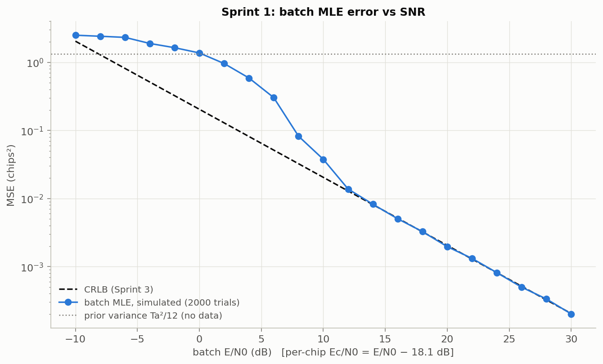
| Regime | Evidence | Meaning |
|---|---|---|
| High SNR (≥ 12–14 dB) | MSE/CRLB = 0.997 on average over 14–30 dB (points 0.96–1.03) | the MLE is efficient: it attains the CRLB |
| Threshold (≈ 6–12 dB) | gross errors 0.8 % at 10 dB, 2.1 % at 8 dB, 8.7 % at 6 dB | wrong-peak errors take over |
| Low SNR (≤ 0 dB) | MSE above the prior variance; 3.09 chips² on pure noise | no useful information; edge pile-up |
Slope of the S-curve at zero 1.000; pull-in range ±1.80 chips; noise-free final error ≈ $10^{-7}$ chips; locked MSE 1.04–1.09 × CRLB (by design of $K$); at 0 dB some runs lose lock (Figure 10).
Derived and implemented CRLB agree with a frequency-domain computation to 0.05 %; MLE attains it above threshold; three identified reasons it fails below (Section 5.4); pilot dependence factor 2.4.
Both limits reproduced (1.3323 vs 1.3333; 0.997 × CRLB at 40 dB); the bound lies below the simulated MLE at every SNR within the 95 % interval; it departs from the CRLB at 5.95 dB.
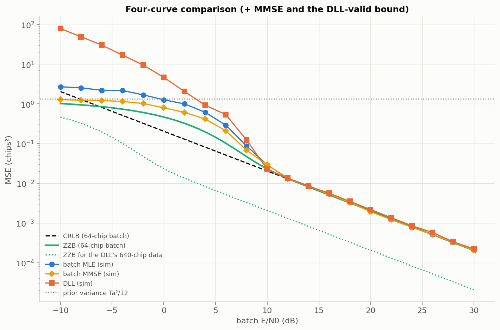
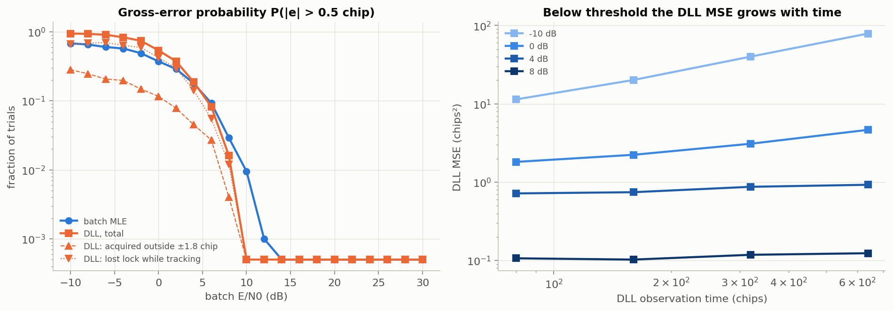
At 0 dB, 54 % of DLL runs end with a gross error: 12 % acquired outside the pull-in range, 42 % lost lock while tracking. Loss of lock is the dominant DLL failure — a mechanism the batch MLE does not have.
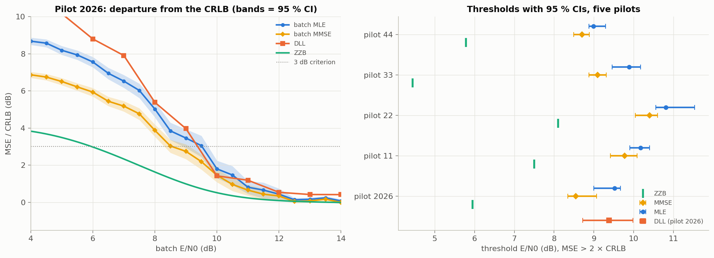
| Pilot 2026, MSE criterion | Threshold | 95 % CI |
|---|---|---|
| ZZB (bound) | 5.95 dB | — |
| Batch MMSE (best possible estimator) | 8.54 dB | [8.35, 9.07] |
| Batch MLE | 9.52 dB | [9.00, 9.66] |
| DLL | 9.38 dB | [8.72, 9.98] |
The gap to the bound splits in two: bound looseness MMSE − ZZB = 2.59 dB, and MLE sub-optimality MLE − MMSE = 0.85 dB (CI 0.25–1.24, significant). About three-quarters of the gap is the bound being optimistic — built from pairwise tests while an estimator must reject all competing delays.
Five pilots: MLE − ZZB ranges 2.7–5.4 dB (mean 3.5); MMSE − ZZB 2.3–4.7 dB (mean 2.9); the MMSE is ahead of the MLE for every pilot. The ZZB threshold moves a lot (4.4–8.1 dB) and nearly follows each pilot's $\beta^2$, while the MLE threshold moves less (9.0–10.8 dB): because thresholds are defined relative to each pilot's own CRLB, a pilot with larger $\beta^2$ leaves its (lower) CRLB sooner.
DLL vs MLE depends on the criterion:
A subtlety: the MMSE has a lower MSE threshold but a slightly higher gross-error threshold than the MLE (9.63 vs 9.49 dB): by hedging between peaks, it makes more moderate errors just above 0.5 chip and fewer very large ones.
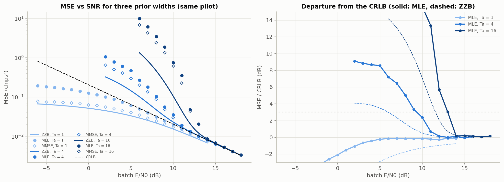
| $T_a$ | ZZB | MMSE (95 % CI) | MLE (95 % CI) | MLE − ZZB |
|---|---|---|---|---|
| 1 chip | none | masked | masked | — |
| 4 chips | 5.95 dB | 8.84 [8.58, 9.14] | 9.34 [8.81, 10.08] | 3.4 dB |
| 16 chips | 11.56 dB | 12.99 [11.97, 13.37] | 13.01 [11.95, 13.41] | 1.5 dB |
Being able to say why each choice was made, and what went wrong before, is what convinces an examiner that the work is understood.
| When | Decision / correction | Why |
|---|---|---|
| Sprint 1 | m-sequence script replaced by the raised-cosine, random-delay model | ZZB needs a prior; exact delay; analytic spectrum |
| Oct 6 | Prior width 1 → 4 chips | with 1 chip the MLE never left the CRLB (threshold masked) |
| Oct 6 | DLL given the MLE's pilot, repeated periodically | with a different pilot the DLL appeared to beat the CRLB (the CRLB is pilot-specific) |
| Oct 6 | Block replicas, offset calibration, constant gain | removed biases of 33 % and 100 % of the CRLB and a noise blow-up |
| Oct 7 | Error bars and two threshold criteria | validation showed 2000 trials on a 2-dB grid cannot support "the DLL is 1.2 dB worse" |
| Oct 7 | Pull-in range corrected 0.75 → 1.8 chips; failure classes made to partition the total | measured S-curve; overlapping categories were wrong |
| Oct 7 | "DLL ≈ CRLB is a bound" withdrawn | the match holds by design of $K$; the 64-chip CRLB does not bound a 640-chip estimator |
| Oct 7 | ZZB for the DLL's own data added | only valid bound for the DLL |
| Oct 7 | DLL windows follow its own timing | fixed windows distorted low-SNR behaviour |
| Oct 9 | Pulse tapered over its last chip | hard cut made the ZZB miss the CRLB limit by ~1 % |
| Oct 9–12 | "MLE biased (bias² curve)" replaced by conditional bias; "gap mostly MLE sub-optimality" corrected | averaged bias cancels by symmetry; MMSE only ≈ 0.85 dB better |
| Nov 5 | "DLL not different from MLE" refined | true for MSE, false for gross errors (notebook 06) |
| Nov 5 | Novelty claim narrowed | batch ZZB for GNSS code tracking already exists (Survey 04) |
| Survey | Method | Lesson |
|---|---|---|
| 01 Independent validation (Oct 7) | literature check, from-scratch re-implementation, adversarial audit | core theory and code correct; several claims wrong → fixes and error bars |
| 02 Literature survey (Oct 13) | annotated bibliography, gap searches | everything up to the batch threshold is a reproduction; candidate gap: a bound for DLL loss of lock |
| 03 Deep-research novelty check (Oct 13) | multi-agent search, 25 claims × 3 verifiers | optimal-MTLL theory exists for phase tracking → claim must be about code delay and the bound↔MTLL link |
| 04 Interdisciplinary & second novelty check (Nov 5) | targeted searches | batch ZZB for GNSS code tracking already exists (Emmanuele 2012, Liu 2016); natural bridge = state estimation + integrity; robotics/VLM links would be forced |
Reproduction: MLE, CRLB, ZZB for delay, MLE threshold prediction (Mallat et al. 2014), batch ZZB for GNSS code tracking, linear DLL theory, DLL MTLL. Our own observations: ZZB looseness measured against the MMSE (2.6 dB + 0.85 dB), its pilot dependence, the DLL failure decomposition, the criterion-dependent DLL-vs-MLE comparison, the prior-width trend of the gap. Appears open (medium-low confidence): bounds with tracking dynamics linked to loss of lock for PN code delay. Rule: always "we found no prior work that…", never "first".
Part IV — The remaining 30%
PROPOSED — nothing in this section is implemented. Full text: docs/evaluation/research_proposal.md.
| Direction | Novelty | Feasible now | Verdict |
|---|---|---|---|
| D1 Dynamic decomposition of the tracking threshold (bound / estimator / loop) | medium | yes (core) | recommended |
| D2 Loss-of-lock risk prediction (safety-critical autonomy) | medium | yes (reuses D1) | part of D1 (H4) |
| D3 Adaptive loop bandwidth via control/RL | low (LBCA, fuzzy, adaptive KF, RL proof of concept exist) | partly | not pursued |
| D4 Pilot/code selection by threshold | low–medium (ZZB waveform design exists) | yes (≈1 week) | small side project |
| D5 Robot localisation with UWB | low; physics mismatch (NLOS ≠ thermal threshold) | risky | forced — not pursued |
Our static study split the gap to the bound into bound looseness (ZZB → MMSE, 2.6 dB) and estimator sub-optimality (MMSE → MLE, 0.85 dB). The project is about tracking, where two new things happen: memory (the prior at each step is the previous posterior, which narrows the search window and should lower the threshold) and feedback (the DLL commits to one estimate and can be pushed outside its pull-in range — loss of lock). Question: for a moving delay, how much of a DLL's low-SNR failure is fundamental, how much is sub-optimal estimation, and how much is loss of lock — and can loss of lock be predicted quantitatively?
one update $k$ per block of $M$ chips. Likelihood (Section 4.1): $\ln p(\mathbf r_k\mid d)=J_k(d)/\sigma^2+\text{const}$.
Because the state is one-dimensional, the recursion can be computed essentially exactly on a fine grid (point-mass filter, Bucy & Senne 1971) — so the "optimal" baseline carries no Monte Carlo approximation error. Its posterior mean is the MMSE tracker.
Tichavský, Muravchik & Nehorai (1998) give $J_{k}=D_{22}-D_{21}(J_{k-1}+D_{11})^{-1}D_{12}$ with $D_{11}=\mathbb E[-\partial^2_{d_{k-1}}\ln p(d_k\mid d_{k-1})]=1/q$, $D_{12}=D_{21}=-1/q$, $D_{22}=1/q+J_D$, where $J_D=\sum_ns_k'(t_n)^2/\sigma^2$ is the measurement information (Section 5.1). Substituting:
$$ J_k=\frac1q+J_D-\frac{1/q^2}{J_{k-1}+1/q}=J_D+\frac{J_{k-1}}{q\,J_{k-1}+1}=J_D+\frac{1}{q+1/J_{k-1}}. $$With $R=1/J_D$ and $P=1/J$, the fixed point satisfies $P^2+qP-qR=0$, so
$$ P_\infty=\tfrac12\Big(-q+\sqrt{q^2+4qR}\Big),\qquad K_\infty=\frac{P_\infty+q}{P_\infty+q+R}, $$exactly the steady-state scalar Kalman filter. Link to our DLL: $\theta_{k+1}=\theta_k-KD_k$ with $D_k\approx\varepsilon_k+n_k$ is a fixed-gain Kalman filter in the linear regime; choosing $K=K_\infty$ makes it optimal there. This replaces our Sprint-2 gain choice ("match 64 chips") with a principled one.
Kalman: prediction $P^-=P+q$, update $P=P^-R/(P^-+R)$. At steady state $P(P+q+R)=(P+q)R\Rightarrow P^2+qP-qR=0$. ∎
Using the measured S-curve $D(\varepsilon)$ (Section 8.1) and discriminator noise of variance $\sigma_D^2$, the error evolves as
$$ \varepsilon_{k+1}=\varepsilon_k-K\,D(\varepsilon_k)-K\,n_k+w_{k+1}, $$a one-dimensional Markov chain. Discretise $\varepsilon$ on a grid inside the lock region $|\varepsilon|\lt R_{\rm pull}\approx1.8$ chips. The mean exit time $m(\varepsilon)$ satisfies the first-step equations
$$ m(\varepsilon)=1+\sum_{\varepsilon'}P(\varepsilon\to\varepsilon')\,m(\varepsilon'),\qquad m=0\ \text{outside the lock region}, $$i.e. one linear solve $(I-P_{\rm in})\mathbf m=\mathbf 1$; the mean time to lose lock is $m(0)$. Published MTLL results are mostly continuous-time, second-order loops at small-noise asymptotics; this discrete first-order version uses our measured S-curve directly and can be checked against simulation.
From the optimal tracker's posterior, the probability that the DLL is already outside its pull-in range: $\rho_k=P\big(|d_k-\hat\theta^{\rm DLL}_k|\gt R_{\rm pull}\mid\mathbf r_{1:k}\big)$. Compared with a classical correlator-power lock detector by ROC curve and detection lead time — relevant to integrity monitoring in autonomous navigation.
| Hypothesis | Test | If it fails | |
|---|---|---|---|
| H1 | Above threshold, DLL with $K=K_\infty$ and the grid tracker both attain the PCRB | RMSE vs $E_c/N_0$ | implementation error or non-linear jitter — diagnose |
| H2 | The DLL leaves the PCRB earlier than the grid tracker; conditioning on lock removes most of the excess | lock-conditioned RMSE | excess is jitter inflation inside lock — quantify it with the Markov chain |
| H3 | Markov-chain MTLL matches simulation; the DLL threshold is where MTLL ≈ observation horizon | MTLL vs $E_c/N_0$, $K$ | refine the discrete approximation |
| H4 | The posterior risk score predicts loss of lock earlier than a classical detector | ROC/AUC, lead time | report where each detector wins |
| Week | Work | Deliverable | Priority |
|---|---|---|---|
| 1 | random-walk model, PCRB recursion, grid tracker, DLL($K_\infty$), E1; tests | notebook 08 | P0 |
| 2 | E2, Markov-chain MTLL (E3) | notebook 09 | P0 |
| 2 | risk score (E4), ablations | figures, table | P1 |
| 3 | stretch bound; report and final presentation | report, slides | P0 / P2 |
| Existing | What it does | What D1 adds |
|---|---|---|
| Emmanuele et al. 2012; Liu et al. 2016 | ZZB for one integration period of GNSS signals | tracking dynamics; decomposition bound / estimator / loop |
| Holmes & Biederman 1978; Hasson & Bobrovsky 1995; Groh et al. 2012 | MTLL of given loops | link MTLL to the MSE threshold and to the optimal tracker |
| Tichavský 1998; Rapoport & Oshman 2007; Fritsche 2015 | generic recursive bounds | applied to PN code tracking, against an exact optimal tracker |
| Fischler & Schuss 2007 | optimal-MTLL filtering for phase | code delay (non-periodic, code-dependent side-lobes) |
Part V — Rehearsal
Cover the answer, say it aloud, check. F: = likely follow-up.
A1. What is your project in one sentence?
We estimate the delay of a known BPSK signal with a batch MLE and a DLL and compare them with the CRLB and the ZZB, to understand the low-SNR threshold where errors suddenly become large.
A2. What exactly is the threshold effect?
A change in the type of error: above threshold the estimate sits on the true correlation peak; below it, noise sometimes makes a wrong peak win and the estimate jumps chips away (Figure 1, Section 6).
F: Is it a sharp transition? — No, a region a few dB wide; hence fixed criteria and confidence intervals.
A3. Why plot MSE rather than variance?
Below threshold the estimators are biased for a given delay, and the ZZB bounds MSE. MSE = variance + bias² (Section 2.1).
A4. Why is the CRLB not valid at low SNR?
It assumes unbiasedness, it is local (curvature of the true peak only), and it ignores the prior — below −8 dB it exceeds the prior variance.
F: So is the CRLB wrong? — No; it is a correct bound for a class our estimators leave at low SNR. It is not informative there.
A5. Can an estimator beat the CRLB?
Yes: a biased one; a constrained one near the window edge (MSE/CRLB = 0.63 there); one using more data than the CRLB assumes (a narrow-band DLL uses 640 chips).
A6. Why does the ZZB need a prior? Is a uniform prior realistic?
It bounds the MSE averaged over the prior — that is why it stays finite at zero SNR ($T_a^2/12$). Uniform models "the delay is somewhere in this window" after coarse acquisition.
F: How does the result depend on $T_a$? — $T_a$ = 1: threshold masked; 4 → 16: threshold rises ≈ 3.7 dB and the ZZB gap shrinks 3.4 → 1.5 dB (Section 10.7).
B1. Why a raised-cosine pulse?
CRLB = $1/(2(E/N_0)\beta^2)$; rectangular chips have $\beta^2=\infty$ ⇒ CRLB = 0. Real receivers band-limit.
B2. Why 4 samples per chip?
The spectrum ends at 0.75 cycles/chip < Nyquist (2); samples hold all information and sums equal integrals.
B3. Why did you taper the pulse?
A hard cut left a small slope jump; samples on it broke the identity $\rho''(0)=-\beta^2$, so the ZZB missed the CRLB limit by ~1 %. The taper only touches 5 < |t| ≤ 6, where integer points are zeros anyway.
B4. Why does the MLE need no SNR but the MMSE does?
$\sigma^2$ scales the whole log-likelihood (arg-max unchanged); the posterior mean weights by $e^{J/\sigma^2}$, which depends on it.
B5. Why did the model change after the first Sprint-1 script?
ZZB needs a random delay with a prior; exact analytic delay; analytic spectrum. Same qualitative result.
C1. Derive the MLE.
Gaussian likelihood → expand the square → drop $\sum r^2$ → maximise $J(\theta)$ (Section 4.1).
C2. Derive the CRLB, including the inequality itself.
Score → $\mathbb E[(\hat\theta-\theta)S]=1$ → Cauchy–Schwarz (Section 2.4); then $I=\frac1{\sigma^2}\sum s'^2$ (Section 5.1).
F: Why is $\beta^2$ the Gabor bandwidth? — Parseval: differentiation multiplies the spectrum by $j2\pi f$.
C3. Prove $\mathbb E[X^2]=\int_0^\infty2xP(X\ge x)dx$.
$X^2=\int_0^\infty2x\mathbf 1\{X\ge x\}dx$; take expectations, swap by Tonelli (Section 2.6).
C4. Why is any estimator's tail probability bounded by $P_{\min}$?
Use it as a detector (decide $H_1$ iff $\hat\tau\ge\varphi+h/2$); its errors are exactly the tail events; no detector beats the optimal one (Section 7.2, step 3).
C5. Why is $P_{\min}=Q(\sqrt{(E/N_0)(1-\rho(h))})$?
Equal priors, known signals in white noise: $Q(\|\mathbf s_1-\mathbf s_0\|/2\sigma)$ (Section 2.3) and $\|\mathbf s_1-\mathbf s_0\|^2=2\sum s^2(1-\rho)$.
C6. Show ZZB → CRLB at high SNR.
$1-\rho\approx\frac12\beta^2h^2$; $\int_0^\infty hQ(ah)dh=1/(4a^2)$ by parts; $a^2=\frac12(E/N_0)\beta^2$ (Section 7.3).
F: Why $\rho''(0)=-\beta^2$? — summation by parts: $\sum s\,s''=-\sum s'^2$ (Section 2.5).
C7. Show ZZB → $T_a^2/12$ with no signal.
$Q(0)=\frac12$; $\int_0^{T_a}\frac h2(1-\frac h{T_a})dh=T_a^2/12$.
C8. What is valley filling and does it matter?
Replace the integrand by its non-increasing envelope (valid because the tail probability decreases in $h$). Here < 0.01 %.
C9. Derive the DLL's noise averaging.
$\varepsilon_{j+1}=(1-K)\varepsilon_j-Kn_j$ → $h_k=K(1-K)^k$ → $\sum h_k^2=K/(2-K)$ → $N_{\rm eff}=(2-K)/K$ (Section 8.2).
C10. Why is early minus late proportional to the error?
$R(\varepsilon-\frac d2)-R(\varepsilon+\frac d2)\approx-2R'(\frac d2)\varepsilon$ (Section 8.1).
D1. Why d = 0.5 chip?
Narrower spacing approximates the derivative better but shrinks the linear region; 0.5 is a standard compromise. Jitter ≈ 1.07 × CRLB.
D2. Where does K = 2/17 come from?
$N_{\rm eff}=16$ updates = 64 chips, the batch length: $K=2/(N_{\rm eff}+1)$.
F: So "DLL ≈ CRLB" is by construction? — Yes, and we say so. A narrower loop goes below the 64-chip CRLB because it uses more data.
D3. Is the comparison fair?
In steady state yes; near threshold no — the DLL sees 640 chips. That is why we plot the ZZB for the DLL's own data, the only bound valid for it.
D4. Isn't the offset calibration $b_j$ cheating?
It uses only the known pilot; with deliberately wrong timing the results were identical. Without it the DLL is biased (MSE ≈ 2 × CRLB at 30 dB).
D5. Which is better, DLL or MLE?
Above threshold equal (by design). Near threshold: same MSE threshold (−0.12 dB, CI [−0.87, 0.59]) but the DLL makes fewer gross errors (0.68 dB more robust) thanks to more data. Far below threshold the DLL is much worse (loss of lock).
D6. Why a first-order loop?
Constant delay, no Doppler: no steady-state error. With Doppler a second-order loop is needed.
E1. How reliable are your numbers?
Up to 20,000 trials per point, bootstrap 95 % CIs, fixed seeds, tests against analytic facts, independent re-implementation, audit (Section 9).
E2. The 3 dB threshold definition looks arbitrary.
Fixed before running; a second, outlier-robust definition is also reported; we state conclusions that hold under both or say when they differ.
E3. The ZZB is 3.6 dB below your MLE threshold. Is the ZZB wrong?
Both limits match analytically and numerically, an independent implementation agrees to 0.12 %. The gap = 2.6 dB bound looseness + 0.85 dB MLE sub-optimality; it depends on the pilot (2.7–5.4 dB) and shrinks for a wider prior.
F: Mallat et al. found their bound much tighter. — Different signal (single pulse vs PN code with side-lobes) and definitions; no contradiction claimed.
E4. Why does the MLE's MSE exceed the prior variance at very low SNR?
The arg-max of a noise process piles up at the window edges (~20 % exactly on an edge): 3.09 vs 1.33 chips². The MMSE goes to 1.33.
E5. Why synthetic data only?
The bounds need the exact model and ground truth; real data add Doppler, multipath, bits and clock effects — future work.
F1. What is your own contribution?
The theory up to 70% is known. Ours: a carefully verified study for one model, plus observations not found stated for PN pilots — ZZB looseness against the MMSE (2.6 + 0.85 dB), its pilot dependence and prior-width trend, the DLL failure decomposition, the criterion-dependent DLL-vs-MLE result. The research contribution is the proposal.
F2. Hasn't the ZZB been applied to GNSS code tracking?
Yes — Emmanuele et al. (ICASSP 2012), Liu et al. (ION ITM 2016), for one integration period. We propose dynamics and loss of lock.
F3. Isn't loss of lock solved by MTLL theory?
MTLL gives exit times of a given loop. We found no work linking MTLL to an MSE bound or to the optimal tracker's threshold.
F4. How sure are you that it is novel?
Not sure — medium-low. Our first survey missed the Emmanuele papers, which is why we say "we found no prior work that…".
F5. Why not deep learning or RL?
Nothing requires it: the optimal tracker is computable exactly (1-D grid). Adaptive-bandwidth RL exists only as a proof of concept.
G1. What if H2 fails?
Then the DLL's near-threshold loss is partly jitter inflation inside lock — itself measurable with the Markov chain.
G2. Why a grid filter, not a particle filter?
One-dimensional state: a fine grid computes the Bayes recursion essentially exactly, no Monte Carlo error.
G3. Link to robotics / autonomous systems?
The DLL is a feedback estimator and the optimal tracker is the same Bayes filter used in robot localisation; predicting loss of lock is an integrity problem. Robot UWB data were rejected as forced: their outliers are NLOS, not thermal.
G4. How would this extend to a real receiver?
Add Doppler (2-D state, second-order loop), carrier phase, data bits, multipath; the grid filter stays feasible in 2-D.
| Symbol | Meaning |
|---|---|
| $\tau,\hat\tau,e=\hat\tau-\tau$ | true delay, estimate, error (chips) |
| $N_c=64$, $f_s=4$ | pilot length (chips), samples per chip |
| $\alpha=0.5$ | raised-cosine roll-off |
| $\beta^2$ | mean-square (Gabor) bandwidth, 1/chip² |
| $E/N_0$, $E_c/N_0$ | batch / per-chip energy-to-noise ratio |
| $T_a$ | prior width (chips) |
| $\rho(h)$ | normalised autocorrelation |
| $d$, $K$, $B_L$, $N_{\rm eff}$ | early–late spacing, loop gain, noise bandwidth, effective averaging length |
| Quantity | Formula |
|---|---|
| SNR | $E/N_0=\sum s^2/(2\sigma^2)$ |
| MLE | $\arg\max_\theta\sum r\,s(t-\theta)-\frac12\sum s(t-\theta)^2$ |
| CRLB | $1/(2(E/N_0)\beta^2)$, $\beta^2=\sum s'^2/\sum s^2$ |
| ZZB | $\int_0^{T_a}h\,\mathcal V\{(1-\frac h{T_a})Q(\sqrt{(E/N_0)(1-\rho(h))})\}dh$ |
| ZZB limits | $T_a^2/12$ (no signal); CRLB (strong signal) |
| DLL | $\theta_{j+1}=\theta_j-K(E-L-b_j)/\bar k$; $N_{\rm eff}=(2-K)/K$; $B_LT=K/(2(2-K))$ |
| PCRB (proposal) | $J_k=J_D+1/(q+1/J_{k-1})$; $P_\infty=\frac12(-q+\sqrt{q^2+4qR})$ |
Kay, Fundamentals of Statistical Signal Processing I (1993) · Ziv & Zakai, IEEE T-IT 15(3) 1969 · Chazan, Zakai & Ziv, IEEE T-IT 21(1) 1975 ·
Bell, Steinberg, Ephraim & Van Trees, IEEE T-IT 43(2) 1997 · Mallat et al., arXiv:1405.4645/4647 (2014) · Emmanuele, Luise, Zanier & Crisci, ICASSP 2012 ·
Liu et al., ION ITM 2016 · Graff & Humphreys, arXiv:2403.12905 (2024) · Betz & Kolodziejski, IEEE T-AES 45(4) 2009 · Stephens & Thomas, IEEE T-AES 31(1) 1995 ·
Holmes & Biederman, IEEE T-COM 26(11) 1978 · Hasson & Bobrovsky 1995 · Groh, Gentner & Selva, IEEE T-COM 2012 · Tichavský, Muravchik & Nehorai, IEEE T-SP 46(5) 1998 ·
Rapoport & Oshman, IEEE T-SP 2007 · Fritsche et al., ICASSP 2015 · Fischler & Schuss, arXiv math/0703524 (2007) · Bucy & Senne, Automatica 1971.
Full annotated lists: docs/surveys/.